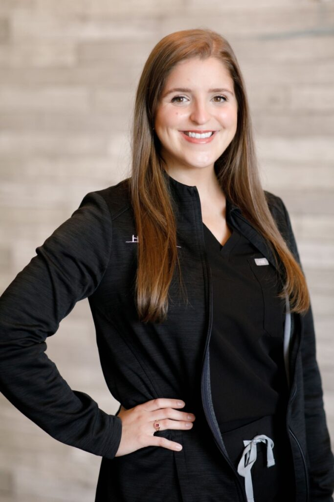

Dr Smith is a Denver native with 14 years experience. I very passionate about what she does. She love bring smiles to my clients at every age. Dr. Smith earned my Bachelors degree at Lousianna State Univerity and futhered my education at Baylor College Of Medicine. I enjoy meeting new clients and bring a genuine life alterning smile to all my patients.
Dr. Henry earned his MD at Colorado University in 2015. He practiced in Pennsylvania before relocating to Colorado, where she developed a passion for providing patients a comfortable environment for receiving dental care. He loves being able to educate his patients to improve their dental health.

Dr. Fahid earned her doctorate at New Hampshire State Univerity in 2007. She passionate about organized and gental dentistry care for all of her pateients. Dr Fahid graduated medical school at the top of her class.She is a proud member of the American Dental Association, and enjoys educaating undergrad students about dental hygiene.